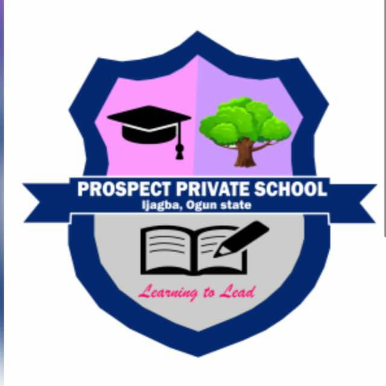

As we conclude the second term, we extend our deepest gratitude to Almighty God, our Alpha and Omega, for guiding us through this journey. We also appreciate our esteemed parents, diligent students, and dedicated staff for their unwavering commitment, resilience, and hard work throughout the term. This term, we have recorded remarkable achievements in academics, extracurricular activities, and community engagement.
We are thrilled to announce the outstanding performance of our students in both midterm and final assessments. Special congratulations to our top-performing students and those who demonstrated remarkable improvements. Our Year 6, 9, and 12 students successfully completed their mock examinations, and we are confident that they are well-prepared for their upcoming state, national, and international exams.
This term, we successfully hosted the Spelling Bee and Inter-Class Quiz competitions at Great Prospect College. These competitions were designed to enhance academic performance, foster healthy competition, and boost student confidence in core subjects such as Mathematics, Further Mathematics, Chemistry, Biology, and Agricultural Science.
Students from different class levels competed, with representatives selected after an internal screening process.
Congratulations to all students who participated in Cultural Day! We explored South African, Indian, and Chinese cultural meals and attire, making it a vibrant and memorable event. Additionally, our Nursery pupils had an exciting Color Week, engaging in fun games and activities that reinforced color concepts, culminating in a colorful splash celebration.
Kudos to our students who embarked on an exciting excursion to explore the Nigerian Railway Service and the new Lagos Metropolitan Railway Network. It was an enriching experience that combined education with adventure.
We are excited to introduce the Indomie Fans Club for students who wish to join. Some students have already registered, and more are welcome to be part of this exciting club.
At Prospect Private School, we strive to keep parents informed about their children's academic progress. Our school portal ensures seamless access to results.
In today’s fast-changing world, skills that empower young minds are more important than ever. Two programs that have proven to be invaluable for students in Nigerian private schools are coding and music. These disciplines not only enrich learning but also prepare students for a successful future.
By incorporating both coding and music into school programs, students receive a well-rounded education that prepares them for the future. Coding sharpens their analytical skills, while music nurtures creativity and emotional intelligence.
📢 Encourage your child to explore coding and music today! 🚀🎶
We remind parents and students about our school's discipline policies. We enforce a zero-tolerance policy for bullying, examination malpractice, and the use of unauthorized gadgets on campus. Parents are encouraged to support the school in maintaining discipline by ensuring students adhere to uniform regulations and punctuality.
We appreciate parents for their prompt payments. Please be reminded that all fees must be paid two weeks before and no later than two weeks after resumption to ensure the smooth running of the school. Payments can be made through the school portal.
We sincerely appreciate our teachers, staff, and parents for their continuous support in ensuring a productive term. We wish all our students a joyful and restful holiday and look forward to another successful term ahead!